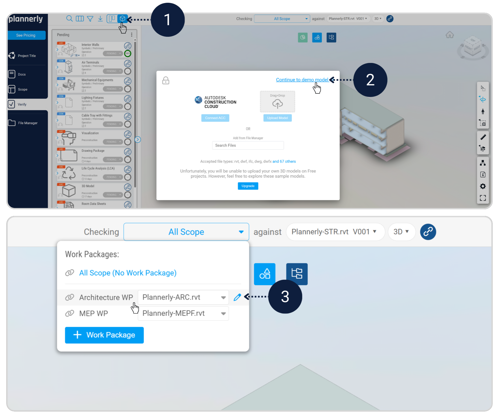
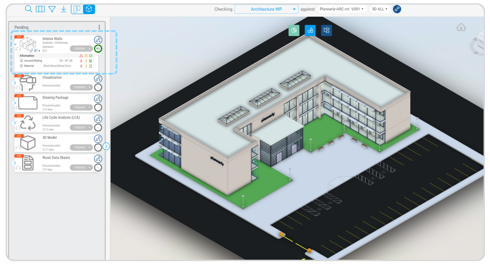
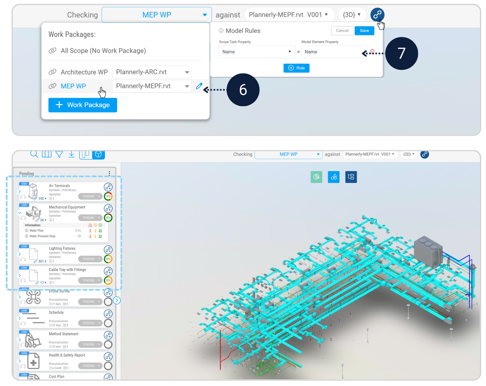
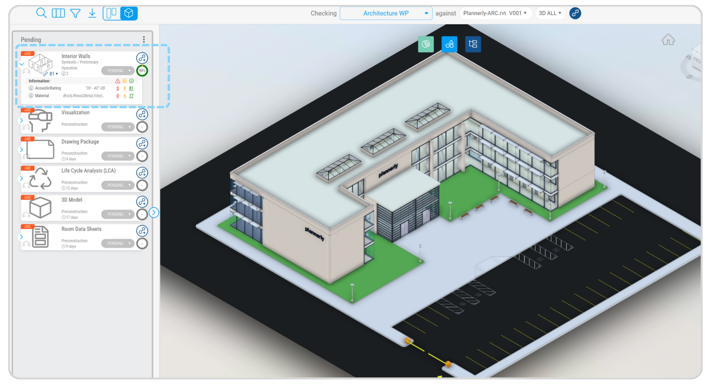
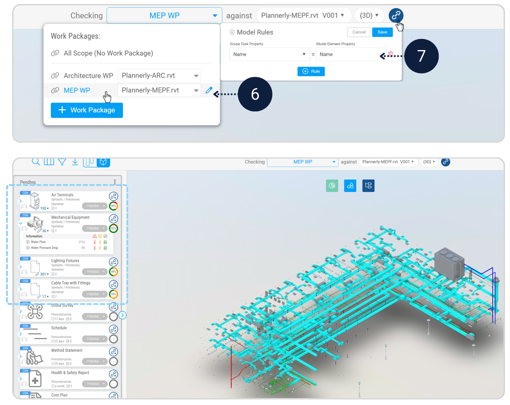

Step 1 - Quality assurance (verify the models)
Module - VerifyBefore issuing anything externally, Appointed Parties must confirm that the model content matches the agreed scope and information requirements. This is your internal safety net.
Required Checklist
- Verify the Architecture Work Package
- Verify the MEP Work Package
- Review the verification results and Export IDS
Verify Work packages
In the Verify module, open Model Viewer. In All Scope select Architecture WP.
Set the Model Rule to Name = Name, then review the verification results. Repeat for MEP WP.
 



IDS Export
Exporting an IDS creates a machine-readable specification of the information requirements you have defined. This allows requirements to be reused and supports openBIM workflows.
- Export the IDS Specification file for the verified scope
- Save the exported IDS file